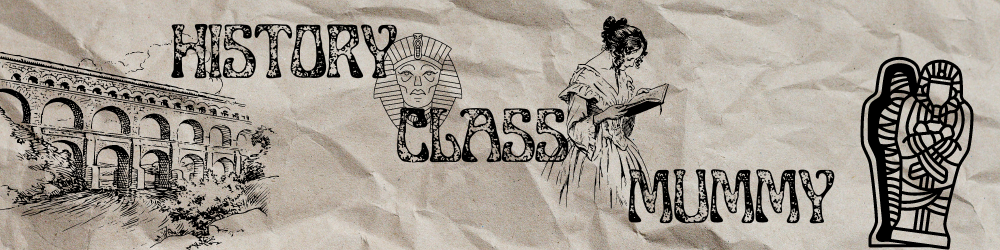

- fggrsgegf



แห่งอียิปต์โบราณ
- ตามความเชื่อของชาวอียิปต์ เลข 7 ถือเป็นเลขมงคล ดังนั้นจำนวนรอบของการพันผ้ามัมมี่ 1 ร่างต้องนับให้ได้ 7 รอบ
- การทำมัมมี่มีอยู่ในวัฒนธรรมความเชื่อเรื่องโลกหลังความตายของหลายดินแดน เช่น ในวัฒนธรรมของชาวประมงโบราณริมชายฝั่งเปรูและชิลี ซึ่งมีการทำมัมมี่มาราว 3,000 ปีก่อนคริสตกาล
แม้การทำมัมมี่มีอยู่ทั่วโลก ไม่ได้เกิดขึ้นแค่ในดินแดนลุ่มน้ำไนล์ แต่กลายเป็นว่าชาวไอยคุปต์กลับเป็นชาติที่มีการพัฒนาวิทยาการเกี่ยวกับการทำมัมมี่มาตลอดเกือบ 3,000 ปี Sarakadee Lite ชวนมาเปิดเบื้องหลัง ขั้นตอนการทำมัมมี่ อย่างละเอียด เจาะลึกตั้งแต่ความเชื่อ พิธีกรรม จากยุครุ่งเรืองในการทำมัมมี่ของชาวอียิปต์ สู่ช่วงสุดท้ายก่อนปิดฉากมัมมี่
ยุคทองแห่งการทำมัมมี่
อียิปต์ไม่ใช่ชาติแรกที่ทำมัมมี่ แต่การทำมัมมี่มีอยู่ในวัฒนธรรมความเชื่อเรื่องโลกหลังความตายของหลายดินแดน เช่น ในวัฒนธรรมของชาวประมงโบราณริมชายฝั่งเปรูและชิลี ซึ่งมีการทำมัมมี่มาราว 3,000 ปีก่อนคริสตกาล รวมทั้ง โคลัมเบีย เอกวาดอร์ แม้แต่อินเดียแดงบนแผ่นดินอเมริกาบางเผ่าก็มีการทำมัมมี่ แต่ที่รุ่งเรืองสุดเห็นจะเป็นในดินแดนอินคา สำหรับชาวอียิปต์โบราณนั้นมีการพัฒนาเทคนิคและความเชี่ยวชาญใน ขั้นตอนการทำมัมมี่ มาโดยตลอด และเป็นระยะเวลายาวนานตั้งแต่ 2,800 ปี ก่อนคริสตกาล จนมาถึง ปี ค.ศ. 640 การทำมัมมี่จึงสิ้นสุดลงพร้อมกับการล่มสลายของอาณาจักรอียิปต์หลังถูกชาวอาหรับเข้ามายึดครอง ช่วง 1,000-950 ปีก่อนคริสตกาล ถือเป็นช่วงพัฒนาการสูงสุดของเทคนิคและวิทยาการมัมมี่ ตรงกับยุคที่หัวหน้านักบวชแห่งอามุน ( Amun ราชาแห่งเทพเจ้า) มีอำนาจมาก เป็นยุคสมัยเดียวกับที่ฝั่งอิสราเอลกำลังรุ่งเรือง ซึ่งตรงกับสมัยกษัตริย์โซโลมอนและกษัตริย์เดวิด
----------------------------------------------------------------------------------------------------------------------------------------------------------------------------------------------------------------------------------------------------------------------------------------------
มัมมี่วัฒนธรรมที่บ่งชี้ความรุ่งเรืองด้านการแพทย์
ขยับมาช่วง 450 ปี ก่อนคริสตกาล มีหลักฐานบันทึกโดยนักประวัติศาสตร์ชาวกรีกชื่อ เฮโรโดตุส เขียนเล่าวิธีการทำมัมมี่ของชาวอียิปต์ ที่ถือได้ว่าเป็นยุคท้ายๆ ของความนิยมในการทำมัมมี่ อีกทั้งด้านพัฒนาการเทคนิคต่างๆ ก็ผ่านพ้นยุครุ่งเรืองมาแล้ว จากบันทึกของเฮโรโดตุส กล่าวว่า ขั้นตอนการทำมัมมี่ ใช้เวลาทั้งหมด 70 วัน และการทำมัมมี่ก็มีถึง 3 แบบ 3 ราคา โดยมัมมี่ที่ดีที่สุด และมีราคาในการทำแพงที่สุดจะใช้เทคนิคการดูดเอาสมองคนตายออกมาทางรูจมูก (ไม่ต่างจากการผ่าตัดในการแพทย์ยุคใหม่) และใช้มีดที่ทำจากหินเหล็กไฟ กรีดข้างลำตัวเพื่อควักอวัยวะภายในออกมา เหลือไว้แค่ก้อนเนื้อที่เป็นหัวใจ และจากนั้นจึงชำระช่องท้องให้สะอาดด้วยเหล้าไวน์ที่หมักจากปาล์ม ก่อนนำร่างไปตากแห้ง ย้อนกลับไปไกลอีกหน่อยในราวพันปีก่อนคริสตกาล เมื่อครั้งทักษะการทำมัมมี่อยู่ในยุครุ่งเรือง มัมมี่ที่ดีจะต้องมีวัสดุประเภทขี้เลื่อย โคลน และผ้าลินิน ยัดเข้าไปแทนที่อวัยวะภายในที่ถูกดูดออก การทำมัมมี่ยุคนั้นละเอียดประณีตถึงขั้นที่มีการกรีดผิวหนังเป็นร่องเล็กๆ และยัดวัสดุดังกล่าวไว้ใต้ผิวหนังด้วย ส่วนมัมมี่แบบราคากลางย่อมเยา จะไม่มีการควักอวัยวะภายในออก แต่ใช้น้ำมันสนซีดาร์ ฉีดเข้าไปในร่างก่อนตากแห้ง และมัมมี่ราคาถูกที่สุดก็มีวิธีการแค่นำร่างไปตากให้แห้ง
----------------------------------------------------------------------------------------------------------------------------------------------------------------------------------------------------------------------------------------------------------------------------------------------
กระบวนการก่อนนำศพไปตากแห้ง
สำหรับร่างที่เตรียมนำไปตากแห้งจะต้องมีการโรยสาร เนตรอน (Natron) ซึ่งเป็นสารประกอบประเภทเกลือจากธรรมชาติ โดยสารเนตรอนนี้เปรียบได้กับสารกันบูดของชาวอียิปต์โบราณ เนตรอนทำหน้าที่เป็นตัวช่วยดูดซึมน้ำ ไขมัน และมีฤทธิ์ฆ่าเชื้อแบคทีเรีย แต่บางข้อมูลก็กล่าวว่ามีการหมักร่างผู้ตายไว้ใต้กองสารเนตรอนไม่ใช่แค่โรยสารเนตรอนลงไปบนร่างเฉยๆ และหลังจากโรยหรือหมักสารเนตรอนแล้ว จึงเข้าสู่การนำร่างไปทาน้ำมัน ตกแต่งและเข้าสู่ขั้นตอนพันผ้าห่อร่าง และนำไปตากแห้งโดยใช้เวลาราว 40 วัน
----------------------------------------------------------------------------------------------------------------------------------------------------------------------------------------------------------------------------------------------------------------------------------------------
จารึกประวัติศาสตร์บนผ้าพันร่างมัมมี่
ความยาว 100 เมตร คือขนาดความยาวของผ้าต่อมัมมี่ 1 ร่าง โดยวัสดุที่ได้รับความนิยมได้แก่ ผ้าลินิน นำไปชุบน้ำยางเหนียวเรซิน เพื่อให้การห่อผ้าแนบชิดสนิทติดกับร่างอย่างเรียบแน่น ผ้าพันศพชั้นนอกสุดเป็นผ้าที่ถูกชโลมด้วยขี้ผึ้ง และใช้วุ้นหรือเจลาตินเป็นตัวยึดผ้าให้ติดกันอย่างแนบสนิทอีกครั้ง ที่สำคัญคือผ้าลินินห่อร่างมักซื้อมาจากวิหารเทพเจ้า ตามความเชื่อที่ว่าเป็น ผ้าศักดิ์สิทธิ์ ช่วยปกป้องคุ้มครองให้ร่างที่กลายเป็นมัมมี่นั้นได้หลับใหลอย่างสงบ ปราศจากสิ่งชั่วร้ายมารบกวน นอกจากชนิดของผ้าแล้ว อีกขั้นตอนที่สำคัญคือการนับจำนวนรอบของการพันผ้า ตามความเชื่อของชาวอียิปต์ เลข 7 ถือเป็นเลขมงคลดังนั้นจำนวนรอบของการพันผ้ามัมมี่ 1 ร่างต้องนับให้ได้ 7 รอบ โดยแต่ละรอบจะมีการวางเครื่องรางเล็กๆ แนบไว้กับร่างด้วย นอกจากนี้ยังต้องมีการเขียนจารึกที่ขอบผ้าพันศพ เปรียบเสมือนการบันทึกประวัติศาสตร์ ในการจารึกต้องระบุสอง สิ่งสำคัญ คือ การระบุว่าเจ้าของผ้าเป็นของผู้ตายเองหรือของญาติมิตร และระบุแหล่งที่มาของผ้าผืนนั้นไว้ที่ขอบผ้าพันศพชั้นนอกสุด หลังเสร็จสิ้นการพัน 7 รอบแล้ว
----------------------------------------------------------------------------------------------------------------------------------------------------------------------------------------------------------------------------------------------------------------------------------------------
ในช่วงคริสต์ศตวรรษที่ 15 (ค.ศ.1400-1500) ชาวยุโรป ได้นำผ้าห่อศพมัมมี่มาขาย ในราคา 8 ชิลลิ่ง (ค่าเงินสมัยนั้น) ต่อผ้าห่อมัมมี่ 1ปอนด์ เพราะคนยุโรปคิดว่า ผ้าห่อศพมัมมี่ช่วยรักษาอาการอาเจียน และรักษาบาดแผลได้ ไม่เพียงเท่านั้นในสมัยศตวรรษที่ 20 ชาวอียิปต์ยังใช้ผ้าห่อศพจากมัมมี่ มามุงหลังคาบ้านแทนใบจากอีกด้วย
โถเก็บอวัยวะภายใน
ในการทำมัมมี่นั้น นอกจากขั้นตอนการรักษาร่างแล้ว อวัยวะภายในสำคัญของผู้ตาย ได้แก่ ตับ ลำไส้ ปอด และกระเพาะอาหาร จะต้องถูกห่อรวมกันไว้และเก็บรักษาไว้พร้อมร่าง (หัวใจอยู่กับร่างไม่ควักออกมา) โดยในยุคแรกๆ อวัยวะเหล่านี้จะถูกห่อผสมกับวัสดุขี้เลื่อย โคลน และผ้าลินิน จากนั้นยัดกลับไปในร่างที่ตากแห้งแล้ว ก่อนขั้นตอนการพันผ้าศพ แต่บางยุคก็มีการนำอวัยวะภายในเหล่านั้นใส่ในโถและวางไว้ข้างมัมมี่ในหลุมฝังศพ ซึ่งโถเก็บอวัยวะภายในของผู้ตาย เรียกว่า “โถคาโนปิก” 1 ชุด มี 4 ใบ นิยมใช้วัสดุเป็นหิน แยกชิ้นส่วนอวัยวะทั้งสี่ไว้ในโถแต่ละใบ
----------------------------------------------------------------------------------------------------------------------------------------------------------------------------------------------------------------------------------------------------------------------------------------------
หน้ากากมัมมี่ หีบ และโลง
หน้ากากมัมมี่ เป็นอีกสิ่งที่จะขาดไม่ได้เพื่อปกปิดส่วนใบหน้าและอกของร่างมัมมี่ที่ถูกพันผ้าเรียบร้อยแล้ว โดยหน้ากากส่วนใหญ่ทำจากผ้าลินินพอกด้วยปูนปลาสเตอร์ ปิดทอง และฝังวัสดุประดับตามแต่ฐานะของผู้ตาย มีการวาดเป็นตาและคิ้วให้สวยงามประหนึ่งร่างนั้นกำลังนอนหลับอย่างสงบ รอการฟื้นคืนจากโลกหลังความตาย สำหรับหีบและโลงบรรจุมัมมี่ก็มีการแบ่งลำดับตามชนชั้นเช่นกัน สำหรับศพของผู้มีฐานะดีจะใช้หีบและโลงซ้อนกันหลายชั้น เพื่อบรรจุร่างมัมมี่ ส่วนโลงชั้นในของชาวบ้านทั่วไปมักเป็นโลงไม้รูปทรงสี่เหลี่ยมผืนผ้า มีการแกะสลักฝาโลงเป็นรูปร่างของผู้ตาย ด้านหีบบรรจุโลงชั้นนอกสุดมักใช้วัสดุเป็นหิน มีโลงศพโลงหนึ่งที่ทำให้คนทั้งโลกตื่นตะลึงมาแล้ว นั่นก็คือ โลงศพชั้นในของมัมมี่ ฟาโรห์ ตุตันคาเมน ที่ทำจากทองคำแท้ และเมื่อเปิดโลงออกมาก็พบว่าหน้ากากมัมมี่ฟาโรห์ตุตันคาเมนก็เป็นทองคำแท้เช่นกัน อย่างที่รู้กันว่ามัมมี่คือการรักษาร่าง ดังนั้นบนโลงศพจึงต้องมีการจารึกคาถาปกป้องดวงวิญญาณขณะเดินทางสู่ปรโลก และรอการฟื้นคืนจากโลกหลังความตาย
----------------------------------------------------------------------------------------------------------------------------------------------------------------------------------------------------------------------------------------------------------------------------------------------
อ้างอิง มัมมี่อียิปต์โบราณ โดย บรรยง บุญฤทธิ์ นิตยสาร สารคดี พฤษภาคม 2543 กันยายน 2531 พฤษภาคม 2529 และ เมษายน 2550
#อียิปต์